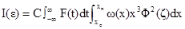
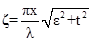
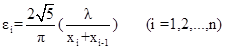
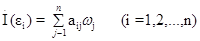
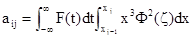

International Journal of Theoretical and Applied Nanotechnology (IJTAN)
ISSN: 1929-1248

Volume 1, Issue 1, Year 2012 - Pages 124-133
DOI: 10.11159/ijtan.2012.019
Distribution Analysis of Nanoparticle Size by Small Angle X-ray Scattering
Yi Zheng¹, Siyi Huang¹, Ludan Wang¹, Tongyan Liu¹, Tongyan Liu²
¹Powder Metallurgy Institute, Central Iron Steel Research Institute
No.76 Xueyuan Nanlu, Haidian District, Beijing, China, 100081
Yizhengsmith@gmail.com, holiday541@126.com, 1310416936@qq.com
²No.910. 9th Section, Jinsong District, Chaoyang, Beijing, China, 100021
Liutongyan1985@126.com
Abstract - This article briefly introduces the fundamental principles of nanoparticle size distribution measurements using Small Angle X-ray Scattering, as well as data processing using the dividing distribution function. The study also investigates the existing methods of data processing. This article also discusses the testing of 2D, 3D nanostructure and Small Angle X-ray Scattering testing used in cosmos, traditional Chinese medicine and agriculture.
Keywords: Nanoparticle, Particle size distribution, Small angle X-ray scattering, Dividing distribution function, Indirect fourier transformation, Nanostructure
© Copyright 2015 Authors This is an Open Access article published under the Creative Commons Attribution License terms. Unrestricted use, distribution, and reproduction in any medium are permitted, provided the original work is properly cited.
1. Introduction
Various methods of determining the size distribution of nanoparticles are available. One such method is electron microscopy, which is straightforward and displays the shapes of the particles, but is inadequate in terms of statistics. Another is the Brunauer-Emmett-Teller (BET) absorption method, which is a classical method of measuring the specific surface area of a particle. In BET analysis, the smaller the nanoparticle, the higher the precision of the result. However, BET measurements are greatly affected by the particle shape as well as superficial conditions. Nanoparticles usually have high specific surface energies, resulting in the occurrence of caking. Nevertheless, the laser-based technique is currently the universally used method. However, these devices often give erroneous results in the measurement of caked nanoparticles because of the laser wavelength and particle caking. The measurement of nano- and sub-micro particle size distribution is a common problem worldwide. In this study, the use of small-angle X-ray scattering (SAXS) in nanoparticle size distribution is investigated.
2. Experiment
Focusing on the distribution of nano particles using SAXS method, two series of experiments were carried out, one being about the test accuracy of SAXS phenomenon with standard sample, and the other being about the Dividing Distribution Function theory of SAXS.
A spherical SiO2 liquid suspension was analyzed using electron microscopy, SAXS, Dynamic Laser Scattering (DLS), and Zeta electric potential particle size analysis. The experimental results were then compared. Fig. 1 shows the Transmission Electron Microscopy (TEM) images of the spherical SiO2 liquid suspension. Table 1 shows the laboratory numbers and instruments used in the analyses. Table 2 shows the average particle diameters measured using the four methods in seven laboratories, as well as the constant value of the particle diameter.
Table 1. Laboratory locations, methods of measurement, and measurement instruments (Chu et al., 2008).
|
No. |
Laboratory location |
Method |
Instrument used |
|
1 |
Central Iron & Steel Research Institute |
Small angle X-ray Scattering (SAXS) |
X'Pert PRO Nano-1 Cu Kα1 |
|
2 |
Central Iron & Steel Research Institute |
Small angle X-ray Scattering (SAXS) |
Rigaku 3014-Kratky Co Kα |
|
3 |
China North Industries Non-metallic Materials Physical and Chemical Properties Testing Center |
Small angle X-ray Scattering (SAXS) |
X'Pert PRO Nano-1 Cu Kα1 |
|
4 |
Institute of Process Engineering, Chinese Academy of Sciences |
Small angle X-ray Scattering (SAXS) |
X'Pert PRO Nano-1 Cu Kα1 |
|
5 |
China National Academy of Nanotechnology Engineering |
Transmission electron microscopy (TEM) |
JEM-2010FEF |
|
6 |
Beijing Center for Physical and Chemical Analysis |
Dynamic Laser Scattering (DLS) |
LB-500 |
|
7 |
China National Academy of Nanotechnology Engineering |
Zeta electric potential particle size analysis |
Malvern- >Zetasizer |
Table 2. Average particle diameters measured.
|
|
1 |
2 |
3 |
4 |
5 |
6 |
7 |
8 |
9 |
10 |
x̄i |
Si |
|
1 |
57.2 |
57.0 |
57.1 |
57.0 |
57.4 |
57.0 |
57.4 |
57.0 |
57.6 |
57.5 |
57.22 |
0.235 |
|
2 |
57.9 |
57.7 |
57.5 |
58.1 |
57.9 |
57.6 |
57.8 |
57.4 |
57.5 |
57.8 |
57.22 |
0.220 |
|
3 |
57.1 |
57.3 |
57.4 |
57.2 |
57.2 |
57.3 |
57.2 |
57.3 |
57.2 |
57.9 |
57.31 |
0.223 |
|
4 |
58.1 |
58.7 |
58.9 |
58.8 |
58.5 |
58.1 |
58.5 |
58.4 |
58.4 |
58.7 |
58.56 |
0.232 |
|
5 |
55.8 |
54.9 |
56.3 |
55.5 |
55.7 |
54.6 |
55.8 |
55.4 |
56.2 |
55.2 |
55.70 |
0.447 |
|
6 |
61.3 |
61.1 |
61.1 |
61.9 |
61.9 |
61.9 |
61.8 |
61.9 |
61.7 |
62.1 |
61.63 |
0.383 |
|
7 |
57.0 |
58.0 |
57.2 |
57.2 |
55.2 |
57.7 |
57.0 |
56.5 |
57.5 |
58.4 |
57.17 |
0.939 |
nm(Chu et al., 2008).
In this experiment, the SAXS results are based on the volume; those of the transmission electron microscopy (TEM) are based on the amount; and the results of the Dynamic Laser Scattering method deviate from those of the SAXS method. The results of the different methods from the different laboratories are clearly close to one other. At the same time, the relative deviation of the results of the SAXS method is within 2%.
However, not all of the nano samples are with beautiful distribution and the shape of standard sphere. Lack of stability during the calculation, there are three errors was detail discussed in the chapter 3.4. What was discussed here, Table 3 and Table 4 is the stability of the calculation theory, Dividing Distribution Function. As, it is a theory with few measurement data and is popular been used in China so that the test of nano diamond powder was also carried out in Central Iron & Steel Research Institute on this research.
Table 3. The different SAXS tests of nano diamond on the same powder.
|
Data |
Incident path |
Scattered path |
Model |
|
9 Dec 2005 |
1/32slit |
PPC+0.27slit |
a |
|
6 Dec 2005 |
1/32slit |
1/8slit+PRS0.05mm |
|
|
20 Dec 2005 |
1/32slit |
PPC+0.27slit+CmCu |
|
|
20 Dec 2005 |
1/32slit |
1/8slit+PRS0.05mm |
|
|
19 Dec 2005 |
1/32slit |
PPC+0.27slit |
|
|
16 May 2006 |
1/8slit |
PPC+0.27slit |
|
|
1 Dec 2005 |
0.04mm |
0.1mm+0.02mm |
b |
|
13 Dec 2005 |
0.04mm |
0.1mm+0.02mm |
The two results of Kratky were considered as reference in Table 3 and Table 4. Comparing with the reference, the six results of mirror system with different test condition were good, stabilizing and dependable. Another conclusion was that the test condition of PRS was best in all six experiments. However, the blank of particle size result on 16 May 2006 from 60nm to 96nm is related to 1/8slit, increasing of the minimum measurement angle, and is also related directly the scar and the shortcoming of DDF theory, less matrix data with more negative value risk under the influence of catching a bad data from three errors in calculation process that was discussed in follow.
Table 4. The detail result of the nano diamond.
|
Data |
Mean Size, nm |
Median Size nm |
1-5 nm |
5-10 nm |
10-18 nm |
18-36 nm |
36-60 nm |
60-96 nm |
|
9 Dec 2005 |
16.4 |
9.4 |
16.3 |
38.3 |
24.6 |
9.8 |
5.4 |
5.5 |
|
6 Dec 2005 |
14.1 |
8.6 |
24.2 |
36.0 |
22.8 |
8.0 |
5.5 |
3.4 |
|
20 Dec 2005 |
14.2 |
8.6 |
24.3 |
35.6 |
23.0 |
8.0 |
5.5 |
3.6 |
|
20 Dec 2005 |
15.3 |
8.8 |
23.2 |
35.1 |
22.7 |
8.3 |
5.7 |
4.9 |
|
19 Dec 2005 |
16.0 |
8.9 |
22.8 |
35.2 |
22.2 |
8.3 |
5.4 |
6.2 |
|
16 May 2006 |
13.6 |
9.2 |
22.4 |
33.2 |
23.7 |
13.7 |
7.0 |
--- |
|
1 Dec 2005 |
15.6 |
9.0 |
18.5 |
39.5 |
0.7 |
11.1 |
6.1 |
4.1 |
|
13 Dec 2005 |
14.9 |
9.0 |
17.5 |
40.6 |
2.7 |
9.9 |
5.7 |
3.6 |
3. Results and Discussion
3.1 Principle of SAXS Measurement on Dividing Distribution Function
As a narrow beam of X-rays is passed through a powder layer containing nanoparticles of the inner structure, and considering the influence of the slit-weighting function along the slit-height direction of the equipment, the scattered intensity I(ε) from a dilute nano electrondense system can be expressed by the formula in equations (1) and (2) as below:
|
 |
(1) |
|
 |
(2) |
|
|
Spherical particle scattering function;
λ: Wavelength of X-ray;
ε: Angle where the scattering intensity is measured;
t: Angle along the slit height direction;
x: Radius of particle,x0, Minimum size, xn: Maximum size;
C: Constant depending on measurement condition and unit chosen forI (ε);
ω(x): the parameter of the size distribution function about the electron density by volume (without normalization);
F(t): Weighing function along the slit height direction;
The electron density of nanoparticle size distribution can be calculated from this formula. The technical specification of ISO13762-2001 was drafted using Dividing Distribution Function method about it. The theory of Dividing Distribution Function on ISO/TS13762-2001 is followed (Zhang et al., 2001, 2005).
The particle size of nano particles is divided from x0 to xn. The term ωn represents the average distribution function of the class Δxj, and scattering intensities are measured at a series of selected angles to obtain n values of I(ε). The angles are specified by the equation (3).
|
 |
(3) |
The integral equation (1) is approximately transformed into a set of linear equations (4) and (5):
|
 |
(4) |
|
 |
(5) |
3.2 Primary Particle Size Distribution
Primary particles, also called original particles, refer to the independent particles separated from one other. However, caking, which is the aggregation of nanoparticles, is a common occurrence in nanopowders. If the particles in the powder cannot be separated, they would, as a whole, settle, shed, and scatter visible light; and the test results would then be those of a caked particle. This behavior is the reason for the failure of many measurement techniques in determining the precise nanoparticle size distribution. By contrast, X-rays can penetrate samples; thus, the SAXS test results show neither crystallization nor caking, but only the really size of the primary particles.
The main reason for the SAXS phenomenon is the electron density difference between the nanoparticles and their environment. In an aggregate, voids are inevitable, and particles form interface networks. The particle size is significantly larger than the X-ray wavelength, and an electron density difference between each particle and its immediate environment persists. Each particle in an aggregate generates a small angle scattering. As a result, the particle size distribution is similar to that of a primary particle. The research group of Zeng Meiqin (Wang H., Zeng M Q., 2004), and X ray analysis group of CISRI had already conducted a lot of thorough investigation on this phenomenon. As shown in Fig. 2, ZnO nano powder was examined using different methods. The average particle diameter obtained using dynamic laser scattering was 6.0012 µm, whereas that obtained via SAXS was 14.6 nm. In the caked nanoparticle system, the SAXS results are more reliable than that of the optical measurement despite the occurrence of caking, which affected the measurements as the X-ray penetrated the nanoparticle.
3.3 Statistical Representation of the Measurement Results
When sampling is properly conducted, the number of particles tested determines the degree of statistical representation of the results. The general experimental conditions in ISO/TS13221-2001 and the Chinese national standard GB13762-2004 were adopted(Zhang et al., 2001, 2005). Approximately 100 mg nanopowder, with a presumed spherical specific gravity of 5 g/cm3 and a particle size of 50 nm, was used. The beaker diameter was 40 mm, the X-ray irradiation area was approximately 15 mm& × 0.05 mm, and the number of nanoparticles measured was approximately 1.8×1010. This simple calculation proves that the SAXS results have good statistical representation.
3.4 Comparison of Several Data Processing Methods
Three preconditions determine the precision of the SAXS measurement, namely, the brightness of the X-ray light source, the minimum measurement angle, and detector sensitivity. Meanwhile, the sampling is also very important. The Dividing Distribution Function method that developed by Zhang Jinyuan is targeted at metallic nanoparticle systems, in which the nanoparticle size distribution is continuous, and the metallic particles are even and uniform(Zhang et al., 1974, 1982,1990; Zhang, 1991; Xiang et al., 2000; Zhang et al., 2003). Metallic (or ceramic) nanoparticle systems emit significant X-ray scattering, which overwhelms the background noise. Hence, Zhang Jinyuan can detect 1nm to 620nm (maximum 900nm) nanoparticle systems using the Rigaku 3014 detection system. A negative value would be obtained if the scattering signal is weak because the Dividing Distribution Function method is a matrix computation method. How then do we avoid a negative value? This question has led to significant debates in the drafting of the ISO/TS13762-2001 and other national standards. In the calculations, all current SAXS data processing methods encounter the negative value problem or significant error problems caused by uncertainties in physical modeling as well as in the measurement system (e.g., the Guinier tangent, Indirect Fourier Transformation, Relevant Function, Normal Distribution Function, Γ-distribution function, and Gradual Logarithm methods, as well as the Dividing Distribution Function method presented by Zhang Jinyuan and Liu Chunlan) (Guinier, 1952; Glatter, 1980; Walter, et al., 1985; Sasaki, 2005;Fan et al., 2008; Zhang et al., 1974). Meanwhile, some studies focused on the nano particles with the shape of thin plates (Meng Z.F,1991;Zhang et al., 2011; Zhang et al., 2011).
The majority of errors in the Guiner tangent and Normal Function Distribution methods are attributed to physical modeling. The Guiner tangent method presumes that all particle size distributions are uniform, and the particle diameter is acquired from the tangent of the tested curve. This method is only applicable when highly uniform nanoparticle diameters are measured. However, such samples are rare, such as virus or floral pollens. For these natural samples, the gyration radius method gives the maximum calculation precision. The computational model of Sasaki assumes that the particle size distribution is a normal distribution function. In nature, the formation of many particles follows the normal distribution function. Hence, this method of Sasaki can be used to compute numerous nanoparticle size distributions, such as those of 15 nm and 35 nm gold nanoparticles measured by Sasaki. However, when the two samples were mixed and then measured using the normal distribution method, the results obtained were erroneous. This simple example proves that the normal distribution function does not fit all samples.
The only typical methods that can randomly measure the size distribution of nanoparticles are the Dividing Distribution Function and the Indirect Fourier Transformation methods. The latter has high computation precision for continuous curves, whereas the former compromises computation precision to obtain a wide-ranging distribution plan, which has a wider scope of measurement. The measurement results of nanoparticle size distribution are affected by three factors, namely, the imperfect spherical shape, errors in the measurement system, and interactions between nanoparticles during the measurement process. Fig. 3 shows a metal nanoparticle, which was obtained via the crushing method and exhibits an irregular shape and surface. In metallic nanoparticle sampling, partial errors due to interparticle distance can be eliminated. Metallic nanoparticles emit strong test signals that overwhelm the partial errors in the testing and measurement systems. Through computerized emulation technology, Zhang Jinyuan and Liu Chunlan theoretically proved the stability of measurement systems that use the Dividing Distribution Function (Zhang et al., 1996). However, the computation became problematic because of the three aforementioned errors, and not all generated samples satisfied the measurement results. A negative value was obtained during the computation and analysis of 10% to 25% of the metallic nanoparticles. To avoid this negative value, Zhang Jinyuan manually modified the initial testing data; this modification was neither stated nor explained as a technical appendix in the form of an appendix of the technical specification of ISO 13762-2001 and China national standard that he drafted. The stability of the metallic nanoparticle measurement through the Indirect Fourier Transformation method was significantly lower than that of the measurement via the Dividing Distribution Function method because of the three aforementioned errors. Otto Glatter also believed that the Indirect Fourier Transformation method cannot be used to measure 1 nm to 300 nm nanoparticle systems, which is one of the main reasons that Zhang Jinyuan drafted the ISO technical specification.
3.5 Calculation on the Background During the Test
Dividing Distribution Function method enjoys enormous impact in China historically. The research of nano particle in China starts from the Chinese nuclear weapons program. Because ultrafine Ni particle can be sintered into nano-holes, which can separate isotopes of uranium element, the ultrafine Ni particle is widely used in the United States and the Soviet Union's nuclear weapons program, which is also adopted in early Chinese nuclear weapons program.
Small Angle X-ray Scattering technique is given high expectations of all the nano hole characterization researches. However because nano hole and sintering raw materials roughly have similar sizes, it's quite hard for Jinyuan Zhang to remove the background during Small Angle X-ray Scattering testing, he then transferred to study the nano particle size distribution of raw materials, and he proposed to use adhesive to bond Ni particles. Because the distance between nano particles is far enough, X-ray scattering interference phenomenon can be neglect, therefore it's very easy to control this distance by weights of adhesive and samples because the distances between tens billion of nano particles are far away enough. Also irregular shapes of some particles can be neglected during sample preparation because the element Ni can produce intense X-ray scatting.
Background signal deducting problem can be divided into several parts: deducting from sample preparation, deducting from universe and instruments and deducting during testing.Below is the discussion of background signal deducting from universe and instruments. The optical path of SAXS testing can be divided into two basic types. One is transmission light path. Another is reflected light path. The typical of transmission light path is the classical Kratky optical path. The SAXS signal is detected by detector which uses many slits to control intensity and position of X-ray when it is penetrating the sample. The classical method of deducting instrument background signal is to value the sample signal before and behind the slit, the difference is generally regarded as the testing value of the sample.
It's mighty difficult to deduct the SAXS testing background of reflected light path. In chapter 3.7, this article discusses the reason why by filling different gases, repeated tests and comparison of each testing data we can obtain real testing signal. If Jinyuan Zhang filled with UF6, WF6, O2, N2 or H2 and other gases during his test, the nano hole testing results won't return empty-handed.
It usually repeatedly measure the background signal data of instruments and cosmos to deduct the influence of which on circuits of instruments, and eliminate the error caused by circuits by averaging results of multiple testing. The detector data can be regard as cosmic background noise when the X-ray optical path is closed, which can be deleted during computational process.
3.6 The 2D test of Nano Multi-Layer Structure on Small Angle X-ray Scattering Method
The roots of Small Angle X ray Scatterng phenomena had been already discussed intensively before 1950. It was said that Porod proposed SAXS phenomena was caused by millipore in 1951, and Kratky, Heyn, Frey-Wyssling, Statton published articles to prove it afterwards(Heyn, 1953). Heikens and other people provided strong evidence of it and determined the micropore in fiber is 1% of the volume fraction(Heikens et al., 1959; Hermans et al., 1959). This history tells us that SAXS is a powerful tool to test distribution of micro aperture.
Langman published a paper which derived the test formulas of apertures sizes distribution and apertures sizes can then be measured accordingly(Langman et al., 1974). Guangwen Pei from Tianjin University, China also published paper continuously discussed the measurements of millipore size and derived the change of it during adsorption process(Pei et al., 1974, 1986a, 1986b, 1988). However because these measurements mainly based on transmission measurements of Kratky optical path, it's impossible to use these measurements to research the transmission test of multi-layered nano-film.
Reverse Osmosis' technique is a very populate seawater desalination method. There are 3 layers of reverse osmosis membrane structure. The bottom plays a role of supporting and macrofiltration, and the diameter of aperture distributes in a micron scale. The middle is embranes with functions of supporting and fine filtering, and the diameter of aperture distributes in nanometer scale (also it is taken that it is nonporous and the reverse osmosis mechanism is a complicated chemical adsorption-desorption) CISRI's X-ray group uses transmitted light path on X' pert pro MPD of PANalitical to test Reverse Osmosis membrane nanostructure by DDF computational methods. Although they did not produce the desired results, the aperture diameter of micron, submicron and nanometer scale can still be observed from their report.
The reflection X-rays of Reverse Osmosis membranes, nano particle and smooth surface are analyzed by CISRI's X ray group using total reflection optical path method by PANalytical Empyrean instruments equipped with accessories. The experimental samples are SiO2 surface obtained by nanofilm Reflector Experiment, clean SiO2 surface obtained by X ray reflection experiment, clean SiO2 particles with nano size distributed on clean SiO2 surface obtained by X ray reflection experiment and Reverse Osmosis membrane obtaind by X-ray reflector Experiment. Result shows in Fig.4.
From Fig 4, the slope of the Reverse Osmosis membranes curve is almost exactly the same as the slope of total reflection curve of the SiO2 nano-powder. This indicates that X-ray small-angle scattering information can show in total reflection curve of Reverse Osmosis membrane, which is merely in plane scan. Different directions of nano-membrane structure can be studied in and out plane scan. Out plan of reverse osmosis membrane is not discussed here. This experiment is very interesting because which can be interpreted as the nano structure appears on SiO2 plane corroded by the air. Therefore the clean SiO2 plan can be regarded as the process of vacuumizing, and the nano structure of SiO2 is in a vacuum state. The conclusion of vacuum weakens Small Angle X-ray Scattering phenomenon is useful, because Reverse Osmosis membrane itself also has nanostructure, shown in Fig. 5.
The SAXS information of this nanostructure is extremely harmful because which will submerge useful SAXS information. However the testing of Reverse Osmosis membrane in a vacuum state only shows polymer internal structure information. Therefore, if different types of gas are charged into this test the result will be totally different, for example, if we charge air, H2, O2, N2, WF6 or UF6, the testing signal will becomes very weak when UF6 is charged because of the existence of U element. Consequently the data will change with different atmosphere, but the objects we concerned do not change at all. That means the nanostructure data observed by SEM can be changed by atmosphere, but those cannot be observed by SEM will not change by different atmosphere at all. We can get intensive study of mechanism of Reverse Osmosis through tedious test, and we can also test different depth and get different layers information through the changing of omega angle. After all the comparion of the tedious test, the angle changing of omega scan finally brought us the 2D nano structure.
3.7 The Measurement of the 3D Nano Structure on SAXS and Model of the Least Square Method
Computing methods such as IFT, DDF are not the least square method with testing error. IFT is the internationally acknowledged testing method, while DDF is the one acknowledged in China. The processing objects of these two methods are different, for example, DDF specialized in processing metal nano particles, while IFT specialized in testing particle size smaller than 100nm. ISO uses DDF method because China is the first country to draft national standards. Out of the need of ISO completion, the research of DDF's fault failed to continue after the death of Jinyuan Zhang's assistance. And least squares method of SAXS was banned respectively in years of 2002 and 2009 out of the same reason. People in China turn to further study the applying of DDF method in other nano materials fields. So the application of least squares method was only oral discussed once in INCFA 2012 conference by Yi Zheng. To be precise, any genuine SAXS detectors should be 2D, but 3D nanostructure need have far more researches than 2D nanostructure, so the IFT and DDF methods cannot be recognized as real SAXS data processing method.
It is generally believed that a typical 3D nanostructure, double helix structure of DNA, is found by XRD technique. However the SAXS phenomenon is overlooked in DNA X-ray picture. How to get DNA structure by SAXS testing data is a difficult problem, and the improvement of 2D detector provides the possibility. This certainly attracts interests of biologists, chemist because it can explore an in-depth discussion of protein structure and also can be used in describing the 3D dynamic process of AIDS virus penetrating into cells. This topic cannot be detailed discussed in this paper. Synchrotron radiation technology and 2D detector technology provide technical possibility of 3D dynamical testing, and the ideal data processing shall all base on least square method for sure. Another result of the development of X ray data calculation about the 3D nano structure research is the changing of the Rietveld theory. X ray diffraction is the special phenomenon of X ray scattering. The calculation of small angle X ray scattering can also be done from low angle to the big angle. That is very good because the special material, such as quasi-crystals, DNA and the chains of winding protein, could also be calculated on the 2D X ray pattern just like the calculation of crystal materials on XRD pattern using the new Rietveld theory based on the calculation of SAXS from small angle to big angle.
3.8 Comparison of the Applicable Scopes of Algorithms
The Indirect Fourier Transformation method, which is the most popular method of obtaining solutions to SAXS, is most appropriate when the particle shape and surface are regular. The normal distribution computation method is undoubtedly very good when the particle size distribution is in accordance with the normal distribution function. Guinier tangent is the best method on the measurement of the same nano particle size, such as natural samples with uniform particle diameters, including red blood cells, pollens, and others. So far, China has gained significant achievements on fertilizer and traditional Chinese medicine nanoparticle crushing technologies. Almost all the traditional Chinese medicines are made into nano particles by a patent technology of Qinhuangdao Taiji Ring Nano-Product Co., ltd. Ginseng produced in Canada also made into nano particles, and which can significantly improve the absorbency of active ingredient in Ginseng. Some drug clinical trials of nano particles even have achieved astonishing 10 times effect. Qinhuangdao Taiji Ring Nano-Product Co., ltd has not systemically published research achievements so far because of the unpredictability of nanotechnology.
Nano carbon particle penetrates the nanostructure of cell, then changes the DNA breeding rhythm and finally stimulates the cell division. Fig. 6 shows a radish grown using a nanoparticle fertilizer. However, the diameter, shape, and surface of these nanoparticles are irregular and submicron-sized. Therefore, the Dividing Distribution Function can be used to treat these samples to obtain good results. Fig. 7 shows the histogram of the nanoparticle diameter distribution of this fertilizer.
3.9 The Using of SAXS on Cosmos Research
If the nano particles are amplified as big as the earth, it means we are processing SAXS nano testing to the earth when a black hole or other stars are emitting X rays conformed to the SAXS testing condition, but the problem is how to find a suitable X-ray source such as pulsar. So far the man-made satellite can run 40 astronomical units, which is the solar system size and can be regarded as running distance of detectors. There are three basic elements in SAXS testing: sample, X-ray resources and detector. The X ray coming from pulsar deeply in the cosmos, penetrating the nano dusts far away from the solar system that we can never touch by our hands, created the distribution information of nano dusts just like the SAXS test in the lab far away from earth in the sky. That X ray beam from the pulsar away from the solar system is an excellent SAXS source that we had never imaged to use before. It was a perfect SAXS measurement system on nano test for the large length of equipment.
And we do not only want to figure out how many nano dusts are diffusing in space in cosmos SAXS testing. What we need to know is far more than the size distribution of these testable particles. Hossfeld discussed the X-ray distribution of line slit in his paper(Hossfeld, 1968). While the nano sample is fixed, the relationship between X ray source and test data is also a very interesting topic in the research of Small Angle X ray Scattering. Knowing the two elements of the SAXS system, the distribution of nano particles that had already been tested in the lab on earth and the measurement data of the X ray from pulsar, penetrated sample that we studied carefully, what we can focused on is the changing of the X ray source deeply in cosmos. That was another nano measurement on the research of universe using SAXS tehnology, the measurement focusing on the changing of internal pulsar. The X-ray spectral in pulsar changes and also reveals the temperature variation of it. Given the nano sample strcture and detector, we can also get more pulsar information because the pulse signal can be magnified and broadened by nano structure sample when X-ray going through, which may be caused by stress change of X-ray source. The occurrence of starquake on pulsar can also be detected so far. We can use nanotechnology to predict when the starquake happen in extragalactic even those happen hundreds of light years far from here by nano sample, so the way to test the internal stress in pulsar shell through precise research will no doubt be exciting. The black holes and dark matter will also affect the SAXS calculation process, which can be calculated and corrected by Einstein's theory. Obviously, the more topic would not be detailed discussed in this paper. However, on such research，we need a big SAXS measurement system. If we were on the research of the particle size of nano dust among the galaxy，using the x ray of supernova far away from the deep space，the only thing we could change is the moving distance of the detector. The biggest distance of such SAXS measure detector is the diameter of solar system. Only NASA had lunched the satellite to fly out the solar system. Obviously, all measurement of these must be under the help of NASA.
4. Conclusions
Although not as precise as the indirect transfer method, the dividing distribution method performs fairly well in measuring the particle size distribution of some common nanoparticle systems. This method has already been proven and is widely used in a number of practical fields. However, the unmodified Dividing Distribution Function method cannot be used as the technological basis for ISO standards in measurements with the negative value problem. Generally, different mathematical models should be used to find solutions to different types of samples so as to obtain better measurement results. The computational model with a measurement scope of 1 nm to 999 nm (which is appropriate for all types of samples) and generates good results should been developed and published. This article also discussed testing of 2D and 3D nanostructure. The cosmos SAXS technique and nano measuring as well as the SAXS testing used in agriculture and Chinese traditional medicine are also discussed in this article.
Acknowledgements
We especially thank the help from Qinhuangdao Taiji Ring Nano-Product and PANalytical. We sincerely thank the unpublished help from Yuan Qu, Fig.3, Jingyi Chen, Fig.4 and Yun Ma, Fig.6.
References
Chu, W. G., Zhang, J. Y., Fang, J. (2008). Small angle X-ray scattering(SAXS) analysis of nanoparticle size distribution—dividing distribution function(DDF) method and its verification. Particulate Systems Analysis 2008, Derbyshire, UK, Sep,2-4, 95. View Article
Fan L. X., Degen, M., Li, J., Takase A. (2008). Small angle X-ray scattering Applied to Nanoparticulate System. Particulate Systems Analysis 2008, Derbyshire, UK, Sep, 2-4, 93. View Article
Glatter, O. (1980). Determination of Particle-Size Distribution Functions from Small-Angle Scattering Data by Means of the Indirect Transformation Method. Journal of Applied Crystallography. 13, 7-11. View Article
Guinier A. (1952). X-ray Crystallography. Hilger & Watts, London, Appendix 1-8.
Heikens, D. (1959). A quantitative investigationon the X ray small angle scattering of cellulose fibers. Part I. The concept of scattering power and a method for its determination in electron units. Journal of Polymer Science XXXV, 139-143. View Article
Hermans, P. H., Heikens, D., Weidinger, A. (1959). A quantitative investigation on the X ray small angle scattering of cellulose fibers. Part II. The scattering power of various cellulose fibers. Journal of Polymer Science, XXXV, 145-165. View Article
Heyn, A. N. J. (1953). Small angle X-ray scattering and interparticle interference in rayons. Nature. Nov. 28, 1000-1001 View Article
Hossfeld, F. (1968). The correction of resolution errors in small angle scattering using hermite functions. Acta Crystallopgraphica A24, 643. View Article
Langman, G. W., Wignall, G. D., Hemming, M., Dawkins, J. V. (1974). Studies of pore diameters in porous silica by small angle X-ray scattering and gel permeation chromatography. Colloid & Polymer Science, 252,298-305. View Article
Meng, Z. F. (1991). Determation of the Particle Volume in Aged Lc4 Aluminium Alloy by Small angle X ray Scattering. Journal of Chinese User of the Rigaku X-ray Diffractometer. 50-52(in Chinese). View Article
Pei, G. W., He, B. L. (1986a). A study of the porous structure of ion exchange resinthrough the small angle X ray scattering method, I. the determination of the porous structure of the ion exchange resins in dry state. Ion Exchange and Adsorption. 2, (1), January 20, 10-17(in Chinese). View Article
Pei, G. W., Li, Y. F., et al. (1974). The measurement on the average diameter of pores in GPC porous silicon ball using small angle X ray scattering. Ji Hua Technology. 5, 21-27(in Chinese).
Pei, G. W., Shi, Z. Q. (1986b). The study of pore structure of ion exchange resins by small angle X ray scattering II. Determination of average pore diameter of ion- exchange resins in the swelling state. Ion exchange and adsorption. 2,(2),April 20, 1-7(in Chinese).
Pei, G-W., Shi, Z-Q., Guo, X-Q., He, B-L., (1988). The application of small angle X ray scattering for investigation of the pore structure of macroporous polymeric adsorbents-The measurement of average pore diameter. Acta polymerica sinica. 2,1(in Chinese). View Article
Sasaki, A., (2005). Size Distribution Analysis of Nanoparticles using Small Angle X-ray Scattering Technique. The Rigaku Journal.22, 1, 31-38. View Article
Walter, G., Kranold, R., Gerber, J., Baldrian, J., Steinhart, M. (1985). Particle Size Distribution from Small-Angle X-ray Scattering Data. Journal of Applied Crystallography. 18, 205-213. View Article
Wang, H., Zeng, M. Q. (2004). Determination of Particle Size Distribution of Nanomater-sized Powder by Small Angle X-ray Scattering Method. Powder Metallurgy Technology. 22,1, 7-11(in Chinese). View Article
Wu, D. H., Yu, S. C. H., (2009). Modification of aromatic polyamide composite membrane by surface temperature sensitivity. Master Thesis. Zhejiang Sci-Tech University. Hangzhou, China. 59 (in Chinese). View Article
Xiang, Y. W., Zhang, J. Y., Liu, C. L. (2000). Verification for Particle Size Distribution of Ultrafine Powder by the SAXS Method. Materials Characterization. 44, 435-439.View Article
Zhang J. B., Zhang Y. A., Zhu, B. H., Wang, F., Zheng, Y., Xiong, B. Q., Wang, Y. Z. (2011). Small angle X –ray scattering study of Al-4.74Cu-0.50Mg-0.3Ag alloys during aging process. The Chinese Journal of Nonferrous Metals. 21(4), 708-713(in Chinese). View Article
Zhang J.B., Xiong B.Q., et al. (2011) The small angle X-ray scattering study of precipitates of Al-Cu-Ag alloys and the comparison of three data processing method. Journal of Chinese User of the Rigaku X-ray Diffractometer. 165-169(in Chinese).
Zhang, J. Y., Liu, C. L. (1974). Small Angle X-ray Scattering Analysis of Particle Size Distribution of Ultrafine Powder . New matels Material. 2, 59(in Chinese).
Zhang J.Y., Liu C.L.. (1982), Small Angle X-ray Scattering Analysis of Particle Size Distribution of Ultrafine Powder. Central Iron and Steel Research Institute Technical Bulletin. 1, 97-103 (in Chinese).
Zhang, J. Y., Liu, C. L. (1990), Small Angle X-ray Scattering Analysis of Particle Size Distribution of Ultrafine Powder (III). Journal of Chinese User of the Rigaku X-ray Diffractometer. 48-54 (in Chinese). View Article
Zhang, J. Y. (1991) Small Angle X-ray Scattering Analysis of Particle Size Distribution of Submicroscopic System. Journal of Chinese User of the Rigaku X-ray Diffractometer. 1-19 (in Chinese).
Zhang, J. Y., Liu, C. L., et al. (1996). Stability of the Dividing Distribution Function Method for Particlesize Distribution Analysis in Small Angle X-ray Scattering. Central Iron and Steel Research Institute. 3,15.
Zhang, J. Y., Liu, C. L. (2001). ISO/TS 13762-2001 Particle size analysis---Small angle X-ray scattering method. International Organization for Standardization. View Article
Zhang, J. Y., Zheng, Y., et al. (2004). GB/T 13762----2004 Nanometer powder----Determination of particle size distribution Small angle X ray scattering method. China Zhijian Publishing House (in Chinese).
Zhang, J. Y., Zheng, Y., et al. (2003). Characterization of Particle Size Distribution of Nanometer System by Small Angle X-ray Scattering method. Modern Scientific Instruments, 2, 3-8(in Chinese).